MCDs sends HTTP request every 30 seconds. Therefore the joborder system
must be running at all times at work hours. All company's web applications
are hosted at server IP of 192.168.1.150
First, ping the server. If packets were sent and received at 100%, the
server machine is turned on and wired to the network. If the ping has no
or unstable response, the server might be going under maintenance.
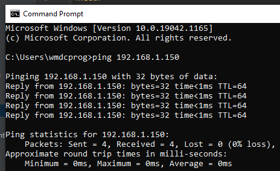
Check the /joborder/ system if its responsive. Type `192.168.1.150:8080/joborder`
into the browser. Login with username: `rjordan` and password: `jordan123`.
If the grids of the job order or work order are slowly loading the list,
the system is not responsive and should be refreshed or restarted if it does
not return to normal.
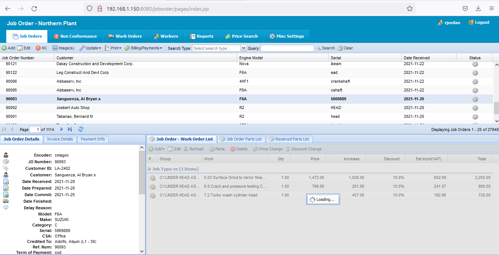
A responsive grids.
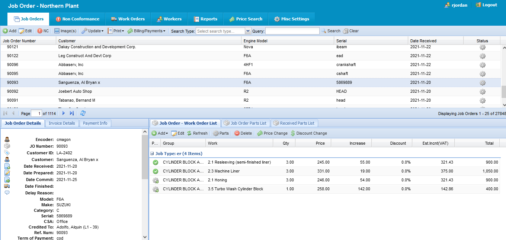
See if there is a work order running on that machine. Get the MCD Id of the
machine from machines.xlsx file. Take for example 10007:
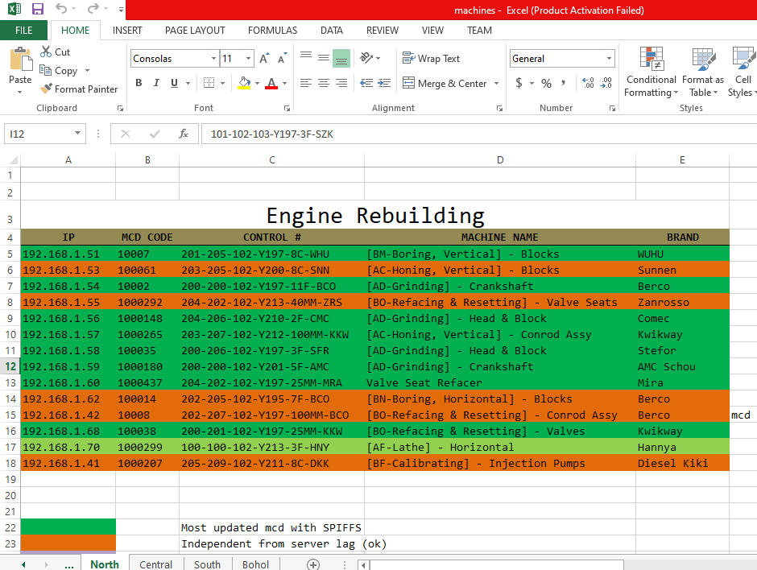
Open Postman and query test to see if there is work order running:
Method: POST
URL: http://192.168.1.150:8080/joborder/IoTWorkInfo
Parameters:
mId: 10007
timestamp: 1631887744
a: t8WooU5D1anfJhdoK4LjhRGT5XD2sbp28M1s72K9vizot9NmGn80s6nNsmsYoiJ
h: f7bc83f430538424b13298e6aa6fb143ef4d59a14946175997479dbc2d1a3cd8
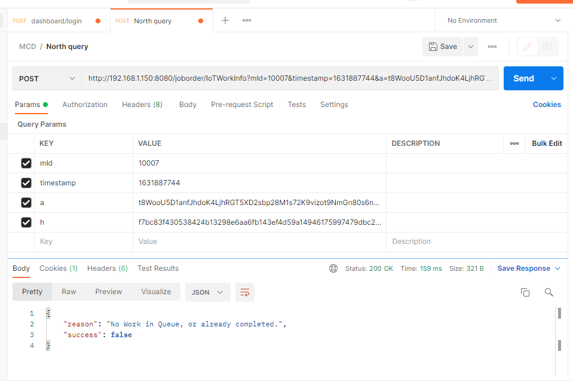
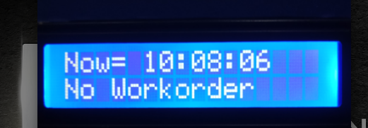
“No work in Queue, or already completed” means no work order and machine will
not run since no electric supply from MCD.
Test query another machine, 100071 for example:
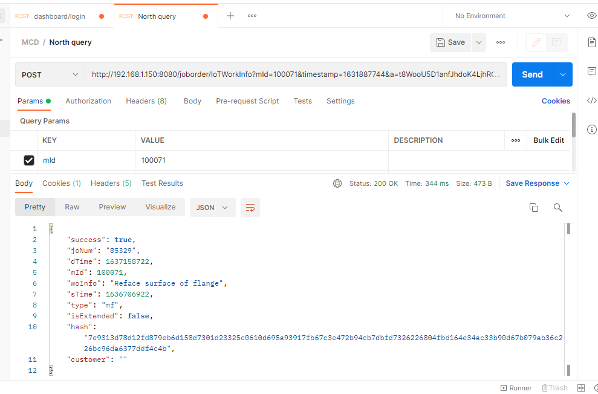
Go to epochconverter.com and paste epoch time (dTime) to see the readable date.
sTime (start time): 1636706922 = Monday, November 15, 2021 12:54:37 AM
dTime (deadline time): 1637158722 = Wednesday, November 17, 2021 2:18:42 PM
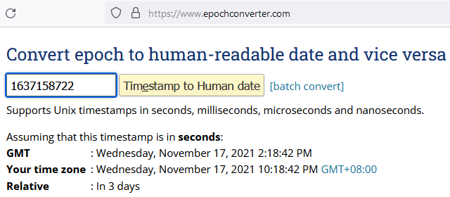

Work order starts at 11-15-2021 12:54:37 AM and ends at 11-17-2021 2:18:42 PM.
The message tells us that there is work order and the machine should run.
There are 3 routers in north, 1 in central and 1 in south plant. These routers
serves as an access point so that MCDs can access the job order system. MCDs
located in ER connect to ER router, MCDs located in MF connect to MF router,
MCDs located in Finance connect to Finance router. No router means no MCD working.
They must be running at all times at work hours. Make sure to tighten the Ethernet
cable from and to its Ethernet port.
ER router has an IP of 192.168.1.34. Enter the IP in the browser. If the router’s
web page renders when typing its IP, the router is ok and running.
username: admin
password: WmdcPassword5432
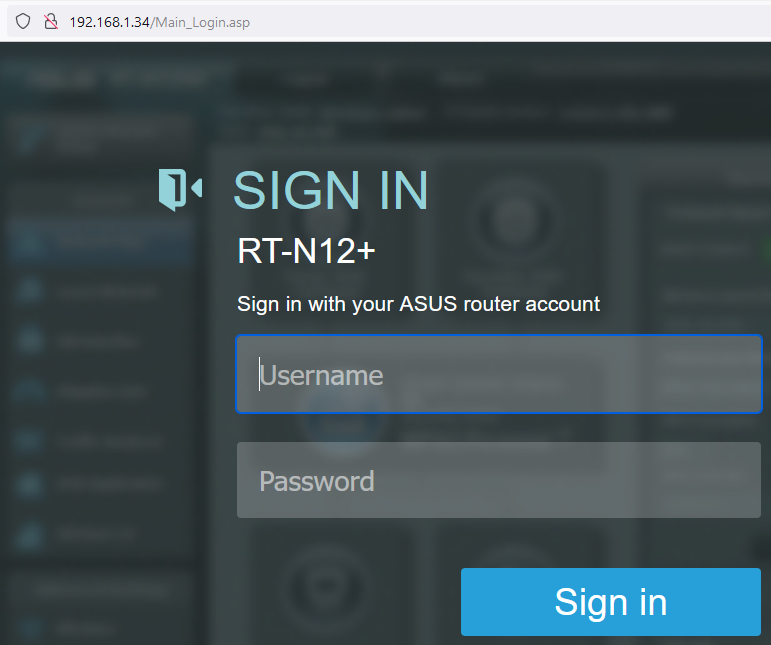
MF router has an IP of 192.168.1.3. Enter the IP in the browser. If the router’s
web page renders when typing its IP, the router is ok and running.
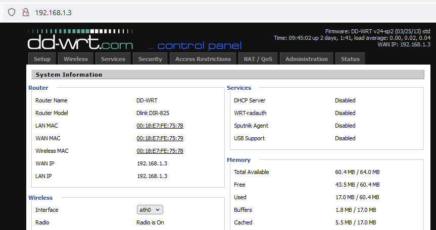
Finance router has an IP of 192.168.1.32. Enter the IP in the browser. If the
router’s web page renders when typing its IP, the router is ok and running.
username: admin
password: WmdcPassword5432
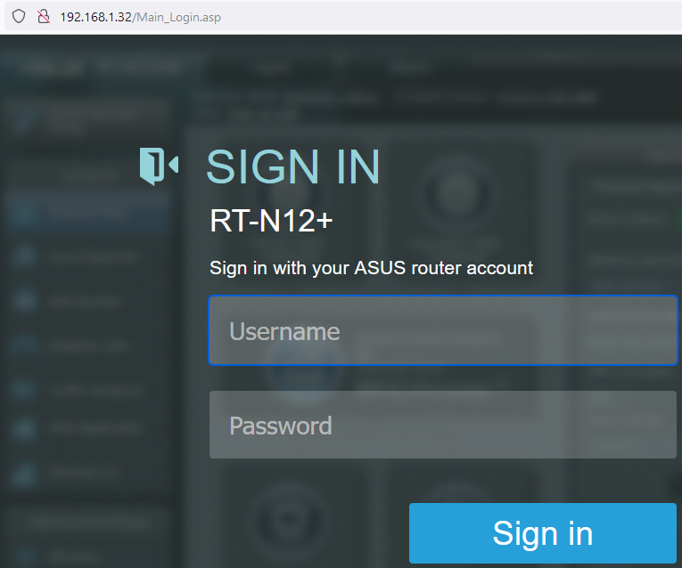
If none of the above works, the last step is to eject MCD from the machine,
bring it to design and troubleshoot